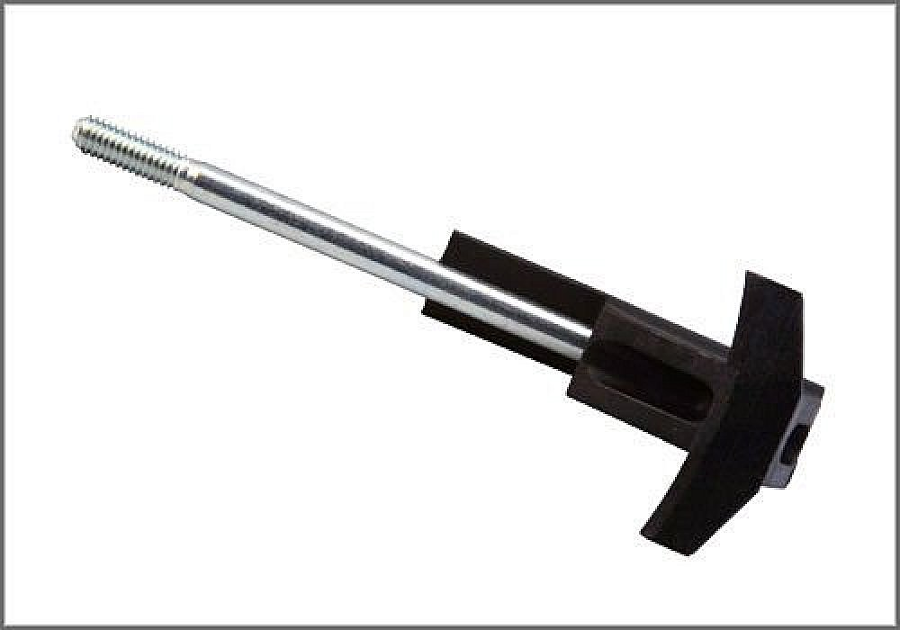
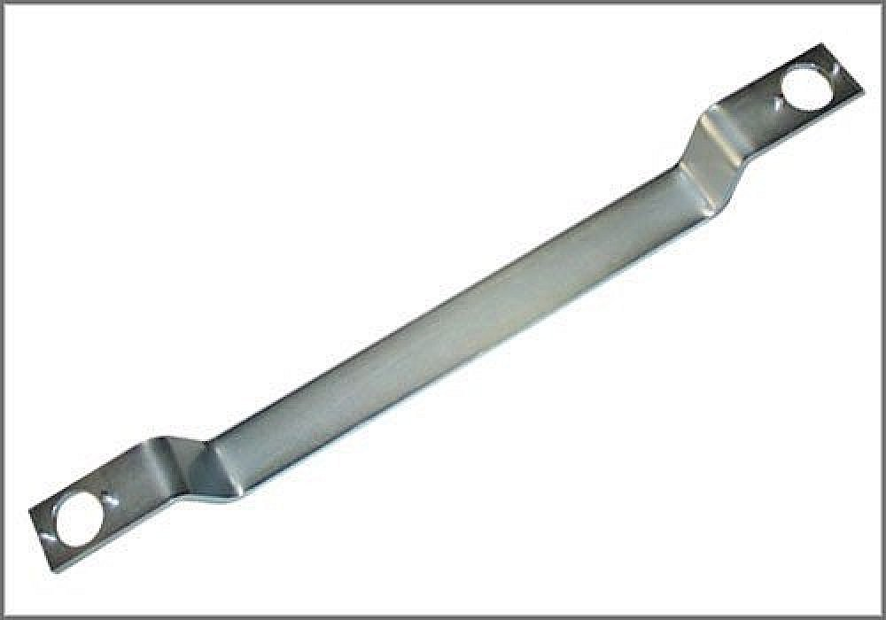
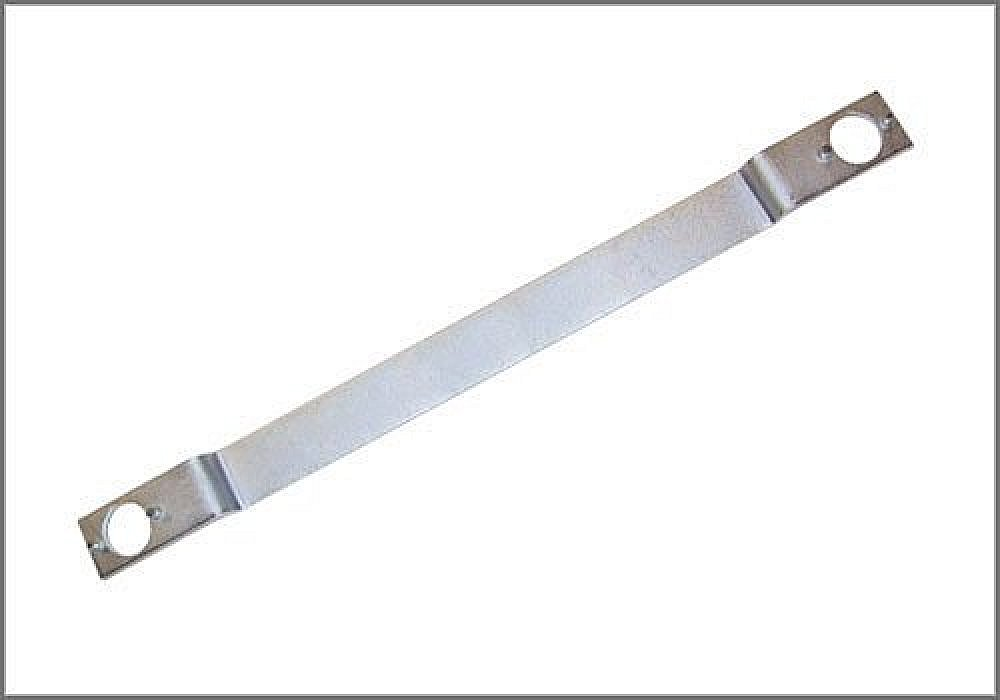

Timing Chain: Tools and Equipment
Bracket for Chain Adjuster
AST tool# 3366

Used when removing and installing the timing chain adjuster. VW and Audi 4, 6 and 8 cylinder engines with 5 valves per cylinder.
- Used for R and R of the Timing Chain Adjuster
- Applicable to Many VW and Audi Models
Contact AST for pricing.
Assenmacher Specialty Tools
1-800-525-2943
Additional Tools Possibly Required:

3242 - Locking Pin

3391 - Camshaft Alignment Tool

6700 - 1.8T Tensioner Holder Set

T 40005 - Audi Cam Align. Tool